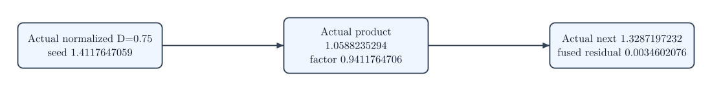
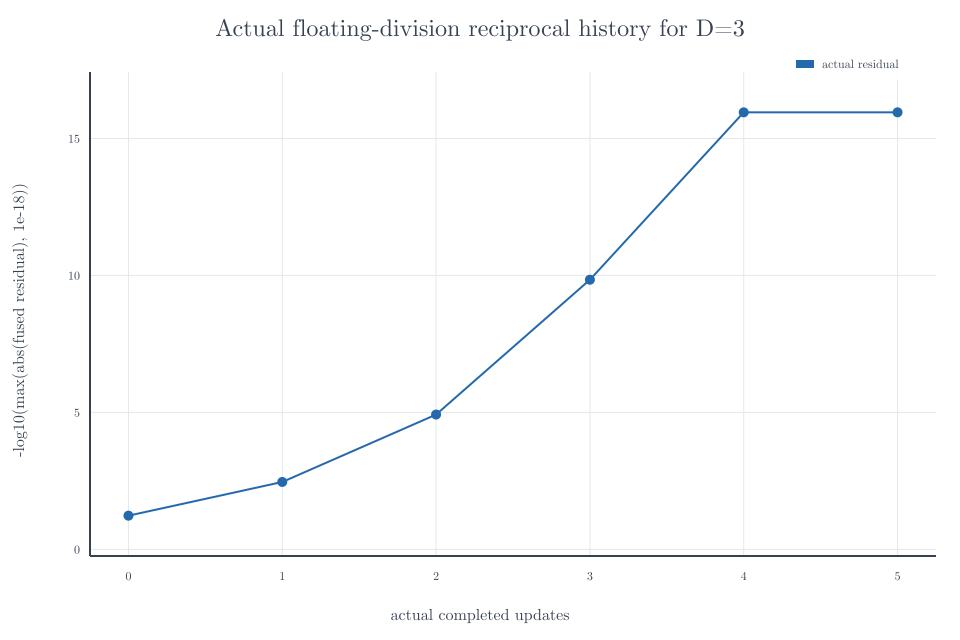
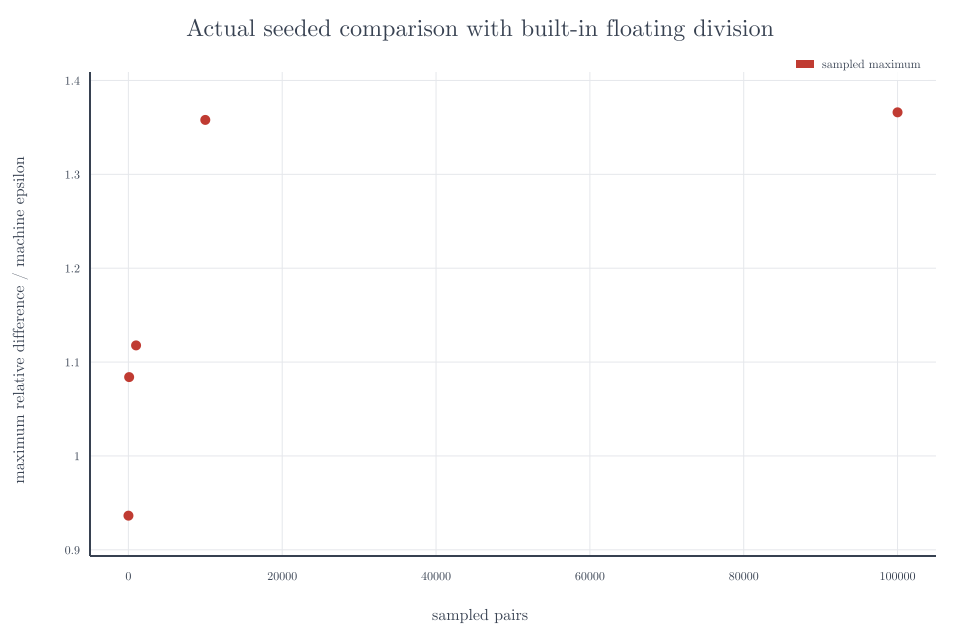
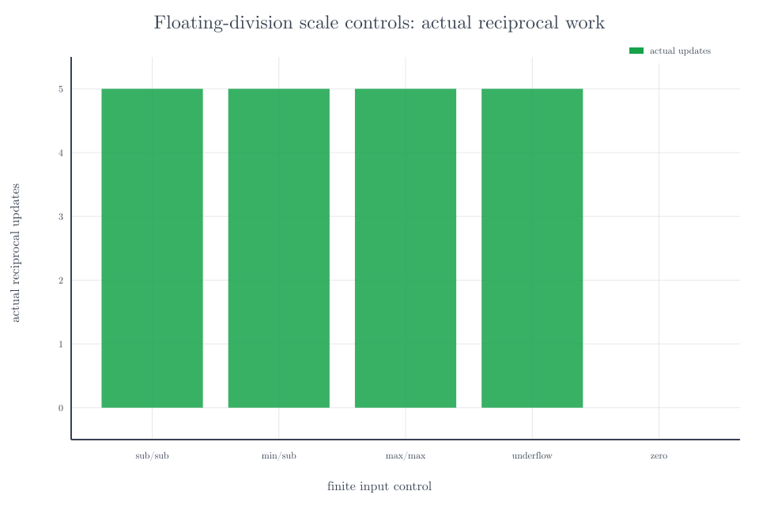

Floating Newton division
Abstract
Approximate a floating quotient using a scaled reciprocal-Newton iteration followed by multiplication. Actual native operands expose the seed and stopping behavior, while the original four signed examples and six-step reciprocal diagnostic are retained. A real100000-pair comparison replaces an unsupported old verification claim, and full-exponent controls expose why quotient scaling must avoid an overflowing intermediate reciprocal.
Normalize the divisor, then refine its reciprocal
Write abs(D)=m_D·2^e_D with m_D in[.5,1). The fixed seed x0=48/17−(32/17)m_D targets1/m_D. For exact arithmetic, e=1−m_D x transforms under x_next=x(2−m_D x) into e_next=e². On the normalized interval the seed’s maximum absolute relative residual is1/17: its endpoint residuals are1/17 and its midpoint residual is−1/17. Squaring explains local rapid improvement, while floating updates eventually stagnate or oscillate rather than doubling correct digits forever.
The actual shared update records its rounded product m_D*x, factor2-product and assigned x*factor. Fused residuals fma(−m_D,x,1) are separate diagnostics, not hidden update operands. Their smaller cancellation error does not turn them into certified real-arithmetic error bounds.
A hand-checkable first normalized step for division by3
For D=3, frexp gives m_D=.75 and e_D=2. The seed is24/17; the first exact-arithmetic update would be384/289, with residual1/289. The figure reads the actual rounded native seed, product, factor and assigned reciprocal from a real division trace. Its output quotient is formed only after the normalized reciprocal loop ends.
#include <dm/dm.hpp>
int main() {
std::filesystem::create_directories("build");
auto t = dm::algorithms::newton_division_trace(1, 3);
auto s = t.steps.front();
dm::graphics::Diagram d;
d.node("seed", {0, 0},
std::format("Actual normalized D={}\nseed {:.10f}",
t.run.denominator_mantissa, s.before));
d.node("factor", {7, 0},
std::format("Actual product {:.10f}\nfactor {:.10f}", s.product,
s.factor));
d.node("next", {14, 0},
std::format("Actual next {:.10f}\nfused residual {:.10f}", s.after,
s.residual_after));
d.edge("seed", "factor").edge("factor", "next");
std::print("Actual denominator exponent {}; actual first normalized reciprocal {}.\n",
t.run.denominator_exponent, s.after);
d.save_svg("build/newton_division_tiny.svg");
}Actual denominator exponent 2; actual first normalized reciprocal 1.328719723183391.

Retain the original four signed division pairs
The original examples are1/3,−7/1024,5/10⁻⁹ and22/7. The table compares actual canonical quotients with built-in double division. The producer retains the old relative state-change stopping test abs(next−before)<=10⁻¹⁷·abs(next), with at most60 updates. That threshold is below typical relative double spacing, so exact stationarity often causes the stop; a small oscillation can exhaust the cap. A finite returned quotient is an approximation, not a correctly-rounded division guarantee.
The actual driver history for division by3 is plotted below. “Residual digits” means−log10(max(abs(fused residual),10⁻¹⁸)); the display floor is explicit. It is not an extra iteration, a timing measurement or a proof of a corresponding number of correct quotient digits.
#include <dm/dm.hpp>
int main() {
std::filesystem::create_directories("build");
std::print("| numerator | denominator | actual native quotient | built-in comparison | actual updates | " "stationary stop |\n| ---: | ---: | ---: | ---: | ---: | --- |\n");
for (auto[n, d] : dm::algorithms::newton_division_demo_pairs()) {
auto r = dm::algorithms::newton_division_run(n, d);
std::print("| {} | {} | {} | {} | {} | {} |\n", n, d, r.quotient, n / d,
r.updates, r.stationary);
}
auto t = dm::algorithms::newton_division_trace(1, 3);
std::vector<double> x{0}, digits{-std::log10(std::max(
std::abs(
t.steps.front().residual_before),
1e-18))};
for (std::size_t i = 0; i < t.steps.size(); ++i) {
x.push_back(i + 1);
digits.push_back(-std::log10(std::max(std::abs(t.steps[i].residual_after),
1e-18)));
}
auto p = dm::graphics::RPlot::create();
p.lines(x, digits, "actual residual", {36, 105, 172}).points(x, digits, "",
{36, 105, 172},
5).title(
"Actual floating-division reciprocal history for D=3").x_label(
"actual completed updates").y_label("-log10(max(abs(fused residual), 1e-18))").save_svg("build/newton_division_original.svg");
}| numerator | denominator | actual native quotient | built-in comparison | actual updates | stationary stop |
|---|---|---|---|---|---|
| 1 | 3 | 0.33333333333333337 | 0.3333333333333333 | 5 | true |
| -7 | 1024 | -0.0068359375 | -0.0068359375 | 5 | true |
| 5 | 1e-09 | 5e+09 | 5e+09 | 6 | true |
| 22 | 7 | 3.142857142857143 | 3.142857142857143 | 5 | true |

Preserve the fixed six-update diagnostic and perform the claimed comparison
The old report also ran exactly six reciprocal updates regardless of the division driver’s stop. That separate educational experiment is retained through the native fixed-update API, with the same normalized divisor and seed. Its table includes stationary updates instead of pretending the driver requested them. The exact-arithmetic error-squaring identity remains distinct from measured floating residuals.
The original text claimed verification over100000 random pairs without actually executing that study in its report program. The canonical check now generates and evaluates those pairs. A local MT19937_64 seed7 supplies signed mantissas and exponents−500..500 in a fixed draw order, ensuring finite nonzero reference quotients. The plot shows sampled maximum relative differences from built-in division in units of machine epsilon for increasing prefix budgets. This observed finite-sample comparison is not a universal accuracy bound or an independent correctly-rounded oracle.
#include <dm/dm.hpp>
int main() {
std::filesystem::create_directories("build");
auto driver = dm::algorithms::newton_division_run(1, 3);
auto t =
dm::algorithms::newton_reciprocal_trace(driver.denominator_mantissa,
driver.seed, 6);
std::print("| completed fixed updates | actual reciprocal | actual fused residual |\n| ---: | ---: | " "---: |\n| 0 | {} | {} |\n",
t.seed, t.initial_residual);
for (std::size_t i = 0; i < t.steps.size(); ++i)
std::print("| {} | {} | {} |\n", i + 1, t.steps[i].after,
t.steps[i].residual_after);
std::vector<double> x, error;
std::print("\n| sampled pairs | actual maximum relative difference | first worst index |\n| ---: | ---: " "| ---: |\n");
for (std::size_t count : {10, 100, 1000, 10000, 100000}) {
auto c = dm::algorithms::newton_division_check(count, 7);
x.push_back(count);
error.push_back(c.max_relative_error / std::numeric_limits<double>::epsilon());
std::print("| {} | {} | {} |\n", c.checked, c.max_relative_error,
c.worst_index);
}
auto p = dm::graphics::RPlot::create();
p.points(x, error, "sampled maximum", {192, 59, 50}, 5).title(
"Actual seeded comparison with built-in floating division").x_label(
"sampled pairs").y_label("maximum relative difference / machine epsilon").save_svg("build/newton_division_check.svg");
}| completed fixed updates | actual reciprocal | actual fused residual |
|---|---|---|
| 0 | 1.4117647058823533 | -0.05882352941176494 |
| 1 | 1.328719723183391 | 0.0034602076124568004 |
| 2 | 1.3333173692843716 | 1.197303672129113e-05 |
| 3 | 1.333333333142195 | 1.4335371778528838e-10 |
| 4 | 1.3333333333333335 | -1.1102230246251565e-16 |
| 5 | 1.3333333333333335 | -1.1102230246251565e-16 |
| 6 | 1.3333333333333335 | -1.1102230246251565e-16 |
| sampled pairs | actual maximum relative difference | first worst index |
|---|---|---|
| 10 | 2.0791633834329815e-16 | 2 |
| 100 | 2.4069469820459825e-16 | 67 |
| 1000 | 2.481913224919012e-16 | 894 |
| 10000 | 3.015288971343286e-16 | 4880 |
| 100000 | 3.0332258556176367e-16 | 62976 |

Avoid overflowing a reciprocal when the quotient is finite
Computing an unscaled1/D before multiplying can overflow for a subnormal D even when N/D is finite. In particular the smallest positive subnormal divided by itself is1. The corrected producer also writes abs(N)=m_N·2^e_N, then forms ldexp(sign·m_N·x,e_N−e_D). This preserves the quotient’s scale without materializing an overflowing raw reciprocal. The control table includes equal subnormals, minimum normal over minimum subnormal, equal maximum finite numbers, signed underflow and a zero numerator.
#include <dm/dm.hpp>
int main() {
std::filesystem::create_directories("build");
double tiny =
std::numeric_limits<double>::denorm_min(), normal =
std::numeric_limits<double>::min(), large =
std::numeric_limits<double>::max();
std::vector<std::pair<double, double>> pairs{{tiny, tiny}, {normal, tiny},
{large, large}, {-tiny, large},
{0, -2}};
std::vector<std::string> names{"sub/sub", "min/sub", "max/max", "underflow",
"zero"};
std::vector<double> updates;
std::print("| control | actual quotient | built-in comparison | negative result sign | zero-numerator " "shortcut | underflowed | actual updates |\n| --- | ---: | ---: | --- | --- | --- | ---: " "|\n");
for (std::size_t i = 0; i < pairs.size(); ++i) {
auto[n, d] = pairs[i];
auto r = dm::algorithms::newton_division_run(n, d);
updates.push_back(r.updates);
std::print("| {} | {} | {} | {} | {} | {} | {} |\n", names[i],
r.quotient, n / d, std::signbit(r.quotient), r.zero_shortcut,
r.underflowed, r.updates);
}
auto p = dm::graphics::RPlot::barplot(updates, names, "actual updates");
p.title("Floating-division scale controls: actual reciprocal work").x_label(
"finite input control").y_label("actual reciprocal updates").save_svg(
"build/newton_division_controls.svg");
}| control | actual quotient | built-in comparison | negative result sign | zero-numerator shortcut | underflowed | actual updates |
|---|---|---|---|---|---|---|
| sub/sub | 1 | 1 | false | false | false | 5 |
| min/sub | 4503599627370496 | 4503599627370496 | false | false | false | 5 |
| max/max | 0.9999999999999999 | 1 | false | false | false | 5 |
| underflow | -0 | -0 | true | false | true | 5 |
| zero | -0 | -0 | true | true | false | 0 |

Contracts and interpretation
Both operands must be finite and the denominator nonzero, with complete checks before arithmetic or history policies. Nonfinite updates or a nonfinite final quotient throw; finite gradual underflow and signed zero are retained. The ordinary routine has at most60 updates and constant driver storage. Actual division trace units are3+updates, with default1000000 and zero disabling the quota; admission precedes each recorded update. The fixed educational trace instead pre-admits4+requested_updates. Neither count is a byte or peak-memory claim.
The update itself uses multiplications and subtraction, but seed constants, exponent operations, compiler lowering and the complete call are not asserted to form a division-free hardware instruction stream. No timing or constant-time conclusion follows from these counters. The algebraic derivation, actual update records and extreme-scale controls specify what this implementation computes, while the sampled comparison remains a finite empirical check.
Verification
This ten-report batch passes75 CTest cases,22 directly instrumented ASan/UBSan
cases,122 compiled and executed public examples,538/538 scoped documentation
definitions and ten representative clangd hovers. Independent Python
arbitrary-precision arithmetic verifies69365 captured division records
with656460 checks; native independent polynomial, geometry, finite-range, graph,
ranking and callback checks cover the remaining producers. Frozen valid-input
comparisons preserve Neville recurrences, Newton result/callback paths, complete
byte encodings, switch routes and NSGA-II complete objective-call
sequences/final fronts. Ten checkout headers and ten byte-identical installed
development headers compile independently; an installed-header native consumer
links and runs. All40 complete programs execute, and40 native figures have been
visually reviewed; HTML/Markdown exports preserve computed rows/prose and
identical image bytes. Checks are scoped native checks, not an installation
claim for every language binding. Receipts:
build/mepml-conversion/batch-254-263/.